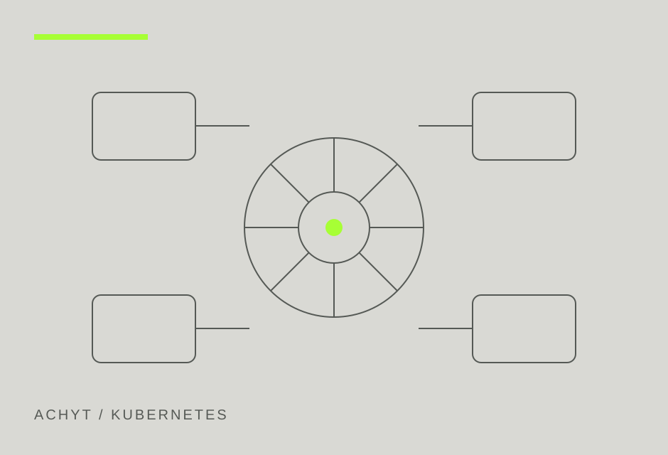

Kubernetes Engineering
Clusters designed for production, not just deployment.

THE WORK
Built for the
operating reality.
We design Kubernetes platforms as operating systems for delivery: secure by default, observable, upgradeable, policy driven, and aligned to the way application teams actually work.
From greenfield cluster architecture to platform hardening and modernization, we focus on day two realities such as upgrades, secrets, network policy, workload isolation, supply chain controls, incident response, and recovery.
WHAT WE DELIVER
- Cluster architecture and platform design
- Managed and self managed Kubernetes
- GitOps and declarative delivery
- RBAC, network policy and admission controls
- Observability, SRE and capacity engineering
- Upgrade, backup and disaster recovery
- On premises and air gapped Kubernetes
HOW WE ENGAGE
Assess
Map workloads, dependencies, security boundaries, release patterns, reliability goals, and the operational constraints that shape the platform.
Design
Define architecture, conventions, controls, interfaces, lifecycle processes, and ownership so the system stays understandable as it grows.
Automate
Implement repeatable builds, testing, policy checks, delivery workflows, observability, and upgrade paths rather than relying on manual operations.
Enable
Document patterns, transfer ownership, and give teams practical runbooks and guardrails for safe day two operations.
Make delivery
repeatable.
Tell us what has to run, where it has to run, and what your delivery and security constraints look like.
hello@achyt.com ↗